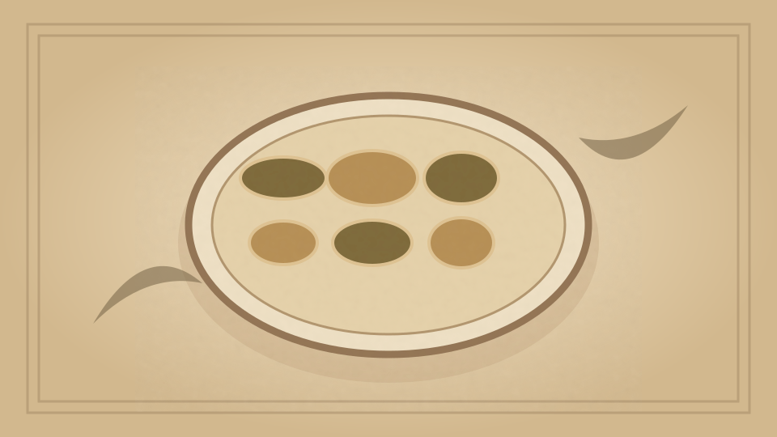

1910 · Fannie Merritt Farmer · BISCUITS, BREAKFAST CAKES, AND SHORTCAKES
Crullers
The Boston Cooking-School Cook Book

Historical Recipe
The following text is extracted from the 1910 edition, retaining historical terminology and quantities.
Original Ingredients & Directions
¼ cup butter
1 cup sugar
Yolks 2 eggs
Whites 2 eggs
4 cups flour
¼ teaspoon grated nutmeg
3½ teaspoons baking powder
1 cup milk
Powdered sugar and cinnamon
Cream the butter, add sugar gradually, yolks of eggs well beaten, and whites of eggs beaten stiff. Mix flour, nutmeg, and baking powder; add alternately with milk to first mixture; toss on floured board, roll thin, and cut in pieces three inches long by two inches wide; make four one-inch parallel gashes crosswise at equal intervals. Take up by running finger in and out of gashes, and lower into deep fat. Fry same as Doughnuts I.
Automatically extracted transcription; editorial verification pending. Historical instructions may not meet modern food-safety standards.